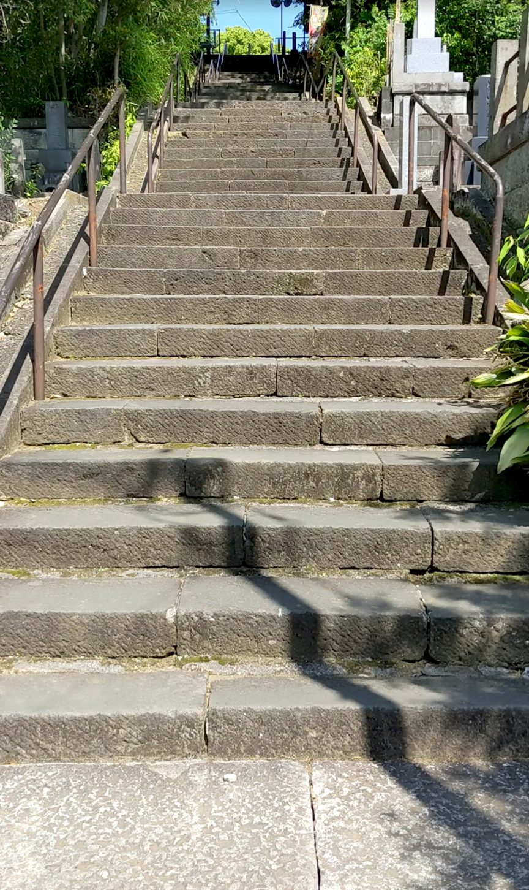
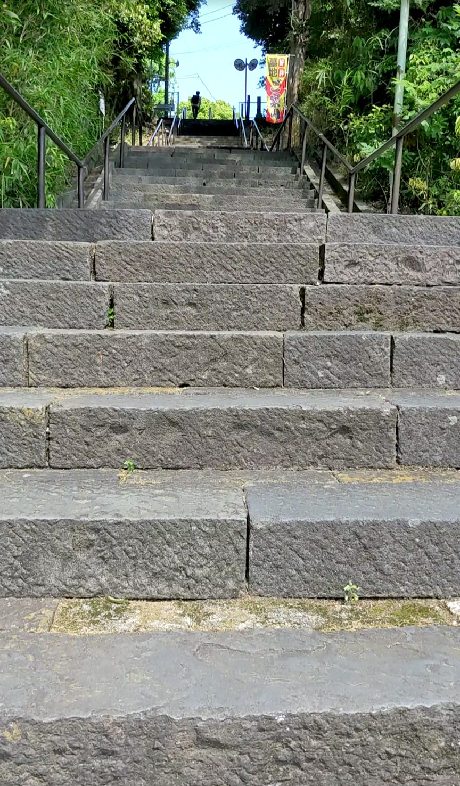
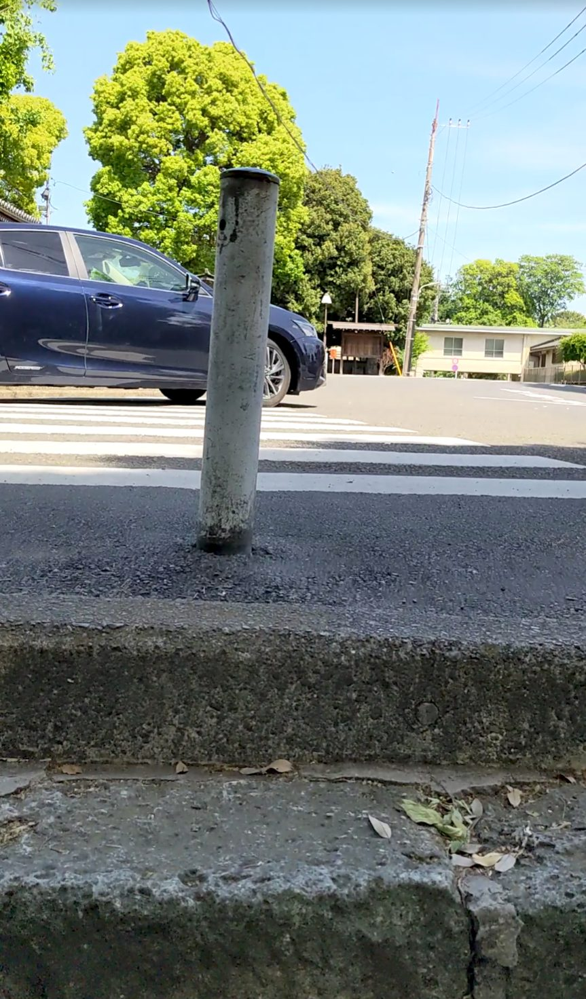

東京都大田区池上にある池上本門寺には、有名な此経難持坂（しきょうなんじざか）のほかにも、もうひとつ石段があります。大堂の脇をぬけたところにひっそりとたたずむ78段の石段です。東急池上線の池上駅から徒歩約10分、此経難持坂を登った流れでそのまま訪れることができます。此経難持坂ほど知名度はないかもしれませんが、しっかりとした造りの、味わいのある石段です。
東急池上線「池上駅」下車、徒歩約10分。池上本門寺の此経難持坂を登り、大堂の脇を抜けると石段の入口が見えてきます。此経難持坂とセットで訪れるのがおすすめです。
グリップのある歩きやすい靴がおすすめです。此経難持坂と比べると段差は穏やかで、踊り場も多く休憩しやすい構造になっています。境内の静かな雰囲気を大切に、ゆっくりと登りましょう。
此経難持坂を登り切り、大堂のそばを歩いていると、ふと視界の端に石段が現れます。案内板があるわけでもなく、ひっそりとそこにある感じ。此経難持坂の迫力に圧倒された後だからか、最初は「小ぶりだな」という印象を受けました。でもよく見ると、横幅がしっかりあって、石の組まれ方も丁寧。小さくてもちゃんとした石段です。

登り始めると、この石段の設計のよさに気づきます。10段ほど登ると踊り場があり、また10段登ると踊り場、というリズムが続きます。こまめに区切られているおかげで息が上がりにくく、自分のペースで着実に高さを稼いでいける感覚があります。此経難持坂で足を使った後でも、無理なく登れました。
後半に差しかかると、木の枝が頭上をおおうように伸びていて、自然のアーチをくぐるような感覚になります。木漏れ日がやわらかく差し込んで、参道らしい静かな雰囲気に包まれます。此経難持坂とはまた違う、落ち着いた表情の石段です。

登り切ると、境内のさらに奥へと続く空間が広がります。此経難持坂の「どーん」とした達成感とは異なる、静かにたどり着いた感じ。池上本門寺を訪れた際には、此経難持坂とあわせてぜひこちらの石段も歩いてみてください。
